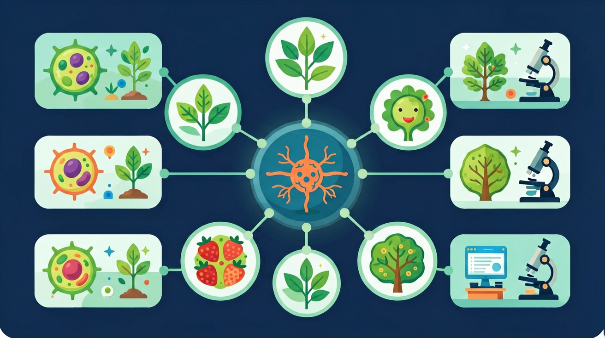

探索人体最精密的"电信网络"——神经元如何传递信号，反射弧如何协调身体反应

🎯 能说出神经元的基本结构和功能
🎯 能判断反射弧的五个组成部分
🎯 能分析简单反射和复杂反射的区别
❓ 为什么我被打针时会忍不住缩手？
❓ 脑子怎么控制我眨眼睛？
❓ 植物人还有没有神经反射？
学完这一课，这些问题你都能自信地回答。
神经调节的基本方式是？
下列属于效应器的是？
神经元是神经系统的基本结构和功能单位，点击下方各部位了解详情
👆 点击神经元各部位查看功能说明
| 结构 | 特征 | 功能 |
|---|---|---|
| 细胞体 | 含细胞核，体积较大 | 代谢中心，整合信息 |
| 树突 | 短而多分支 | 接受其他神经元的信号 |
| 轴突 | 长，末端分支（轴突末梢） | 将信号传向其他细胞 |
| 髓鞘 | 包裹轴突的绝缘层 | 加速神经冲动传导 |
| 突触 | 神经元之间的连接处 | 化学信号传递的关键 |
神经系统分为中枢神经系统和周围神经系统两大部分
👆 点击不同部位了解各结构功能
反射弧是完成反射活动的神经结构，共由5个部分组成
👆 点击"开始反射"按钮，观察信号在反射弧中的传导过程
将下方各组成部分拖放到正确位置，完成反射弧的传导顺序
根据获得方式和神经联系的不同，反射可分为两大类
| 比较项目 | 非条件反射 | 条件反射 |
|---|---|---|
| 形成方式 | 先天遗传 | 后天训练 |
| 神经联系 | 固定不变 | 暂时联系 |
| 消退性 | 不会消退 | 不强化则消退 |
| 控制中枢 | 脊髓/脑干 | 大脑皮层 |
| 适应意义 | 维持基本生命活动 | 适应复杂变化环境 |
共3题，检验你对神经系统知识的掌握情况
完成测验后查看得分
神经系统在人体调节体系中的位置
用乐高积木比喻神经元连接方式
神经冲动像多米诺骨牌连锁反应
简单反射（膝跳）vs复杂反射（望梅止渴）
动画展示针刺缩手反射的神经传导路径
解释运动员听到发令枪的反射过程
关于神经元的结构，下列说法正确的是
设计实验比较运动员与非运动员对视觉刺激的反应时间差异
先独立作答，再点选项查看对错与错因。
短跑起跑时，听觉信号传导的正确路径是
下列哪项属于非条件反射？
神经调节的基本方式是
完成反射活动的结构基础是____，它包括感受器→____→神经中枢→____→效应器五个部分。
答案：反射弧,传入神经,传出神经
反射弧是神经调节的结构单位
吃梅止渴属于____反射，望梅止渴属于____反射。
答案：非条件,条件
区分先天固有与后天建立的反射类型
✅ 实为化学信号（神经递质）与电信号交替传导
💡 教材比喻过度简化
✅ 中枢神经=脑+脊髓；神经中枢=反射弧中的控制部分
💡 术语相似性导致混淆
口诀：感受传入中，运动出效应
类比：神经传导像学校广播系统：教务处发指令（大脑），广播线（神经纤维），各班执行（效应器）
（中考真题）吃梅止渴的反射类型是？
足球守门员扑球时的反射弧中，神经中枢位于？
若某人传出神经受损，会出现？